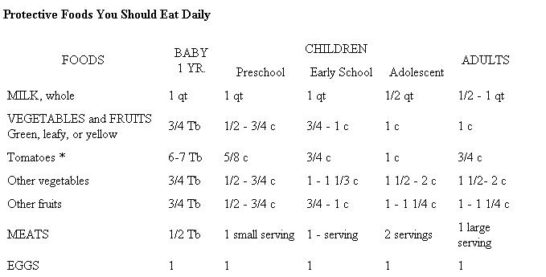

WHY do we put so much emphasis on home food production? In the first place, the health of millions of Americans would be far better if every family raised part of the food it eats.
And when we say every family, we really mean every family. No man, no matter who he is, can break the rules of health and escape suffering the consequences. Even the Presidents of the United States, we honestly believe, would be healthier individuals if they tended their own gardens and milked a family cow. Let us explain.
There are two basic reasons for raising part of your own food. First, only by so doing can you be perfectly fed. Secondly, physical contact with the good earth and livestock are the best known antidotes to the mad, hustle and bustle of our present work-a-day world.
There are many lesser reasons for owning your own home and raising part of your own food. There is the basic security of this way of life, an opportunity for the productive use of your spare time, cooperation of the family and the greater enjoyment of family life, the benefits of fresh air, sunshine, outdoor exercise, an opportunity to be creative, the independence and responsibility of land ownership, all in addition to the direct economic benefits.
A doctor friend who read our Plan said, "Ed, you don't make clear in your Plan how important living-in-the-country and raising-your-food is from the health standpoint."
"Well, we meant to - we sure believe that country living can be healthier. . ." I replied.
"What I mean," he explained, "is the belief of so many physicians today that too much time is being spent diagnosing illness and patching up the sick without doing much about the cause. We're finding that basically much disease is caused by the food we didn't eat - and because the food we did eat lacked vital elements."
He spoke of how a millionaire in Manhattan could suffer from hunger as much as a share cropper. This hunger he talked about he called a "hidden hunger" - a lack of minerals and vitamins in food. Of course, he went on, we all know how a lack of iron causes anemia, a lack of calcium causes rickets, goiter is caused by insufficient iodine, night blindness by insufficient Vitamin A, tooth decay by a lack of fluorine, calcium and phosphorus. The thing, he said, doctors now worried about was how many more diseases of civilization were caused by year-in-year-out deficiencies in the food we eat. The unfortunate aspect of all this is the fact that vitamin and mineral deficient spinach looks about the same as spinach right out of a good garden!
My doctor friend stimulated our interest. He opened our eyes to the vast amount of evidence appearing day-by-day on the subject of being healthy by eating properly.
For example, Army doctors found in their young patients symptoms that looked like those of old age. In the early New Guinea campaign young soldiers suffered from dejected appetites, physical and mental fatigue, reduced resistance to infection. Analyses of tinned food showed only slight deficiencies, but when supply ships came with fresh vegetables, fruit and meat, these minor symptoms of old age disappeared.
And what about the major degenerative diseases of old age? Of middle age, rather-high blood pressure, hardening of the arteries, wearing out the heart, the kidneys, the brain?
Dr. N. Philip Norman, in a Friends of the Land Food Conference in Ohio, pointed out the harm that has been done and is being done to the health of our people by commercial food processing and by our food habits.
He told how all this stuff about vitamin pills had grown as a parasite on the nutrition-for-war-and-defense program - from a little over a million dollars in advertising to two hundred fifty million dollars a year in just four years shows what modern advertising can do with part of the truth. How much good has been done by this? Dr. Norman believes that had we eaten whole-grain cereals in our bread and breakfast food, unprocessed, untouched by the kiln drying, unexploded and not devitalized grain, forage fresh from the vine, tree, and garden - and if we had eaten the meat of animals that had been fed on whole cereals, forage rich with nutrients, especially the internal organs of these animals, and if we had drunk plenty of milk that has been not too badly abused, we would avoid most of these degenerative diseases. There is much evidence to back up Dr. Norman.
Evidence is beginning to appear showing that soil and freshness all effect the mineral and vitamin content of the food we eat. Carrots raised in a mineral-rich soil are more healthful than those raised in poor soil. Hothouse tomatoes, the kind you buy in the store, have but half the Vitamin C content of tomatoes fresh from the garden. Steam-table restaurant fare has a fraction of the value of properly home-cooked foods.
Many of the so-called "fresh" vegetables you buy in the store haven't nearly the value of these same foods out of your garden. Out at Ohio State experiments show that about 43% of the "fresh" vegetables sold in stores have lost the biggest part of their vitamin content. Oranges and grapefruit lose around 30% of their Vitamin C 30 days after picking I've heard.
Now, if you will get yourself a productive home in the country, if you will take a real interest in the fertility of your soil, if you eat plenty of your own home-raised fresh vegetables and fruits, your own fresh eggs, fresh meat, use honey instead of sugar, drink lots of raw whole milk and eat whole grain bread, all the evidence says you and your family will be far healthier and live longer, more active lives as well!
*Half as much orange as tomato. Tb = tablespoon: c = cup.
MILK, VEGETABLES (particularly FRESH green leafy ones), MEAT, EGGS and FRUIT are called the "protective" foods because they safeguard the body from a variety of diseases.
These foods are needed at all ages - not only by children and adults, but elderly people.
If you raise them on your homestead, you can eat them generously. Most of us need more calories - potatoes, wholegrain bread and cereals, butter, sorghum. and dried beans are good suppliers of calories. Eat sparingly of sugar and other refined foods!
|
 |
|
|